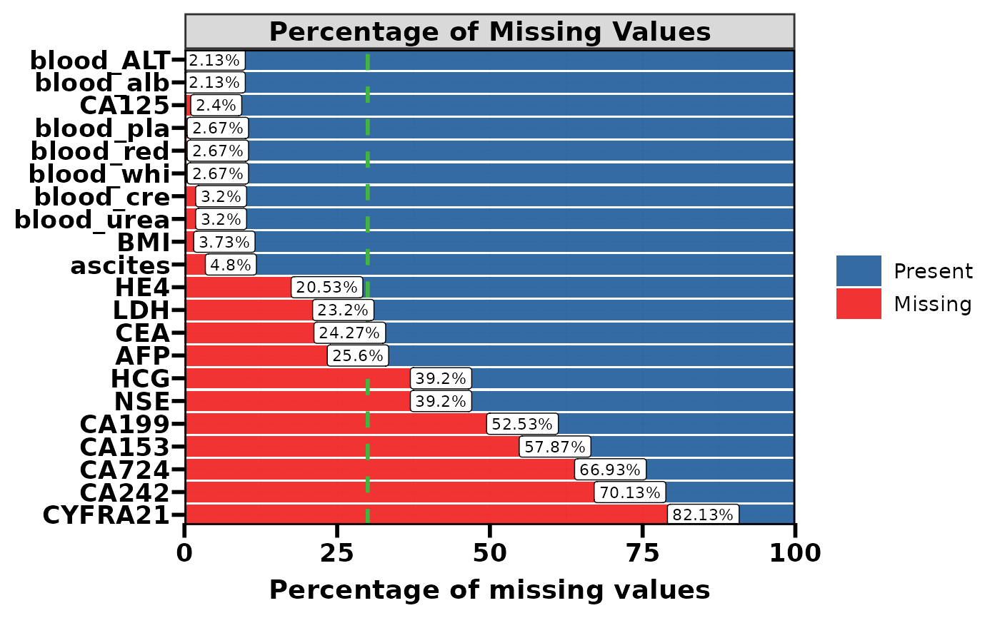
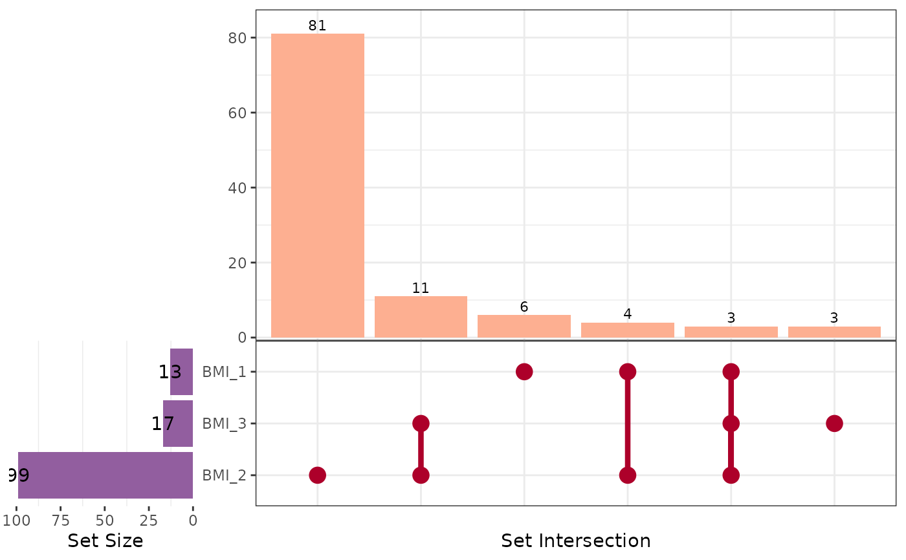

Create a missing-value matrix, a missing-percentage bar chart, or one of two combined layouts for a data frame or an `mlr3::Task`. Use [plt_upset()] with `levels = NA` to visualise joint missing-value patterns across selected variables.
Usage
plt_na(
data,
name.map = NULL,
miss_palette = as.character(pal_lancet[c(1, 2, 3)]),
output = c("both", "both_reverse", "matrix", "percentage"),
sort = c("desc", "asc")
)Arguments
- data
A data frame, tibble, or object inheriting from `Task`.
- name.map
Optional named character vector used to replace variable names in the plot. Names must be the original variable names.
- miss_palette
Character vector of at least three colours. The first colour represents present values, the second represents missing values, and the third colours the 30 colours of [pal_lancet()].
- output
Plot layout to return. One of `"both"` (missingness matrix on the left and percentages on the right), `"both_reverse"` (percentages on the left and matrix on the right), `"matrix"`, or `"percentage"`.
- sort
Variable order by missing rate: `"desc"` (default, largest to smallest) or `"asc"` (smallest to largest).
Value
A single ggplot-compatible object. Combined outputs return a patchwork object, which inherits from ggplot. Returns `NULL` with a warning when no missing values are found.
See also
[fmt_strip()], [plt_upset()]
Other inspect:
check_na(),
check_size(),
check_system(),
count_packages_in_libpaths(),
impute_na_knn(),
lv()
Examples
# \donttest{
if (requireNamespace("ToyData", quietly = TRUE)) {
plt_na(ToyData::oc)
plt_na(ToyData::oc, output = "both_reverse")
plt_na(ToyData::oc, output = "matrix")
plt_na(ToyData::oc, output = "percentage", sort = "asc")
}

if (requireNamespace("ToyData", quietly = TRUE) &&
requireNamespace("ggVennDiagram", quietly = TRUE)) {
plt_upset(
ToyData::oc0,
vars = c("BMI_1", "BMI_2", "BMI_3"),
levels = NA,
output = "upset"
)
}

# }